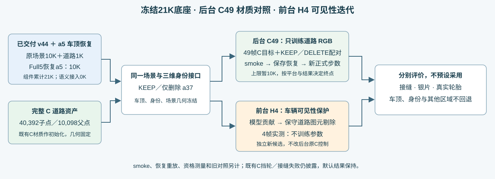

Scene008：冻结21K底座的C49道路材质对照
新增正式训练实际完成2000步，root根据损失近平台、接缝收益方向不一致以及固定遮挡缺陷，决定不盲续5K／10K。不是材质参数已收敛，也不是质量通过。完整49帧KEEP／DELETE及初始C对照已实际输出，全部98帧状态的alpha／depth／8组贡献／语义a5颜色读出逐值不变；道路RGB改变。原默认结果未替换，GPU保持开机。
组件与数据流

21K是原v44场景10K＋道路1K＋恢复a5的Full5 10K的组件累计，语义接入0K，并非连续训练21K的单模型。本对照使用已交付v44＋固定语义a5，不进行端到端重训或纯Full5替换。
完整49帧同步原图对照
左：本轮21K底座；中：完整C道路的初始材质；右：同C道路新增2K材质。三列都是原生完整图，未做屏幕颜色合成。原C的挡轮和接缝缺陷继续保留，不是H2或I的新算法49帧，也不是默认采用版本。
初始C49只保存PNG，未保存完整float；全49几何一致性以真实196F执行端断言和源码为证，独立CPU对C初始几何复核限定4帧。2K的49完整float已保存，可对原底座独立重算。
实际训练合同与计数
完整40392道路子点／10098父点；49帧真实legal mask重新资格，2119父可训练（6357RGB标量），7979父冻结。原40BUILD的2053父全部保留，新增66。KEEP／DELETE共用一份父RGB，一次成对MSE更新算一步；Adam .01、betas .9/.999、eps1e-8，RGB投影[0,1]，49帧无放回shuffle seed20261107。原HELD9此次也为BUILD，不作独立泛化声明。
初始化是既有C400材质，明确含该历史；新正式使用相同Cwarm、新Adam0与同seed从新计数0开始，没有续接smoke参数。车辆、背景、环境、身份、Gaussian几何、intrinsic opacity、relativeMip及原道路组件参数更新0。
| 阶段 | 实际F／B | 优化更新 | 角色 |
|---|---|---|---|
| 49帧资格 | 98／98 dummy | 0 | 不是训练步数 |
| 600.208s真实smoke＋disposable2 | 4012／3988 | 1994工程 | 其中1992为600秒训练 |
| fresh完整恢复／公开核对／next2 | 6／4 | 2工程 | 完整起点与公开128KD逐值同；next2 Adam约2.84e-14差异 |
| 正式0→2000 | 4016／4000 | 2000正式 | 含500／2K各8F评价 |
| 最终49帧Cwarm0 vs2K | 196／0 | 0 | 98状态几何和身份读出逐值一致 |
| 固定H2可见性＋500／2K材质 | 8＋8／0 | 0 | 每个节点8F，不重复100次资格反向 |
上述新C49范围共8344F／8090B，含1996工程更新＋2000正式更新；此前C／E／F各400、旧道路分支和纯Full5已撤回诊断均独立记账，不混成新增C49步骤。完整state、原始日志、失败现场与原21K权重均保留。
为何收在2K
| 固定128近缝残差jump | 原21K底座 | Cwarm0 | 正式500 | 正式2000 |
|---|---|---|---|---|
| KEEP | .0054813871 | .007784822 | .0084542087 | .0057020386 |
| DELETE | .0080031351 | .011724605 | .0124997068 | .0093390737 |
2K近缝比C初始改善，但仍不及原底座；横向23bins的KEEP／DELETE为.008916669／.009049042，原底座.003831551／.003523198，横向变坏。原94门仍48失败／8空域。训练MSE不能替代这些固定接缝和保护项。
2000步含40个完整49帧epoch＋40个partial采样。末5完整epoch的paired MSE从.0009642098478到.0009642006440，约−0.0009545%；500→2000的RGB平均绝对变化.0364261、最大.419801、RMS.0579882，2116／2119父变化大于1e-6。因此只称目标误差近平台，不能称参数不再变化或数学上不可能改进。root按多项实际证据结束本次预算，不把剩余8000步算作已执行。
可见性控制的边界
H2对同一固定模型进行保守整道路图元剔除，保住原生C2／a5／KEEP37前景，大块银片减少，但仍有轮胎下薄边和接缝回退。500／2K材质移植仅替换同一geometry资产的两个RGB数组，其余tuple、全部7979零质量父和固定可见性清单不改；实际8F逐值核验alpha／depth／8groups／语义a5读出相同。这些均不自动成为默认结果，也不把未执行H49当成通过。
下一项4帧强控制检查世界道路边界的连续接管，冻结原参数、不再加材质步数；新policy须单独预注册与实测，不冒充原C算法。
执行与独立证据
完整CPU评价、PNG、必要浮点数据、模型材质和完整恢复state以本地取回清单与AutoDL原始路径为准；轻量Git报告不等于所有大模型备份。human_verdict=null，quality_accepted=false。